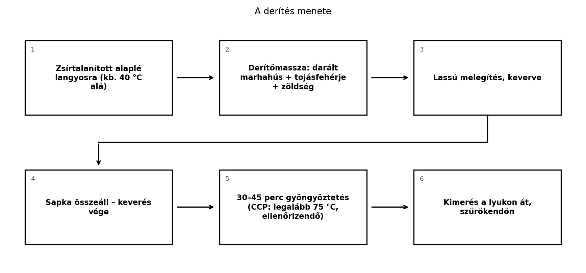
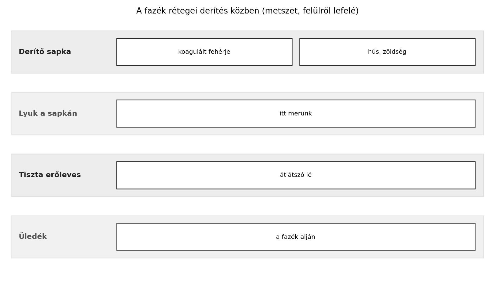

A konyhán gyakran előfordul, hogy a vendég nem zavaros, zsíros húslevest kér, hanem ragyogó, kristálytiszta, koncentrált ízű erőlevest. A klasszikus erőleves (consommé) szebb és elegánsabb a hagyományos húslevesnél, ezért ünnepi menükben, hideg ételekhez is használjuk. Ha a leves zavaros marad, a vendég úgy érzi, hanyag volt a konyha. A zavaros leves nem mindig élelmiszer-biztonsági hiba, de minőségileg gyenge. A derítés az a művelet, amellyel a levest kifejezetten átlátszóvá tesszük. Ezt tanuljuk most meg.
Képzeld el, hogy van egy fazék húslevesed: az íze jó, de a tetején zsír úszik, a lé pedig kissé zavaros, mert apró hús- és zöldségrészecskék lebegnek benne. Ha ezt a levest hagynád ülepedni, a zavarosság akkor is részben megmaradna. A derítés során olyan anyagokat adunk hozzá (darálthús, tojásfehérje, zöldségkockák), amelyek a forraláskor összeállnak, magukkal ragadják a lebegő szennyeződéseket, és a tetején egy „derítő sapkát” alkotnak. Ezután a folyadékot óvatosan leszűrjük: a lé tiszta lesz, mint egy gyenge tea. Ez a klasszikus erőleves lényege.
Definíció. Az erőleves (klasszikus francia: consommé) olyan, többnyire barna hús- vagy csontalapléből, zöldségekből és fűszerekből készülő, derített leves, amely kiforrott ízű, zsírtalan, kristálytiszta folyadék. Eredetileg a francia konyhában az étkezés elején tálalták, de a mai magyar konyhán is fontos alap- és előétel.
Definíció. A derítés (franciául: clarification) olyan tisztítási művelet, amely során a levesben lebegő fehérjéket, apró szövetdarabokat és zsírcseppeket valamilyen derítőanyaggal (darálthús, tojásfehérje, zöldségkocka, sőt időnként hal vagy zöldségpüré) megkötjük, és a koagulált fehérjékhez kötve kivonjuk a folyadékból.
Szabály. A derítéshez mindig hideg vagy langyos alaplevet használjunk, és a derítőanyagot hidegen keverjük el benne, majd lassan, állandó keverés mellett forraljuk fel. Az erős, gyors forralás a derítő masszát szétesésre készteti, ezért a leves zavaros maradhat.
Higiénia. A derítéshez használt nyers darálthús, tojásfehérje, zöldségdarabok könnyen keresztszennyeződést okozhatnak. A nyers húsos alapú derítőanyaghoz használt eszközöket, edényeket azonnal el kell mosni, mielőtt a kész erőlevessel vagy kész ételekkel érintkeznének. A tojásfehérje nyers tojásból származik, így a Salmonella kockázata miatt a levest utána biztonságos maghőmérsékletre kell forralni.
Jogszabály. Az erőleves előállítása során is be kell tartani az általános élelmiszer-higiéniai követelményeket, így a hűtést, a forralást és a készentartást a saját HACCP-terv szerint kell végezni; a pontos hőmérséklet- és időértékeket a terv tartalmazza (ellenőrizendő: HACCP-terv / NÉBIH útmutató).
A klasszikus erőleves alapjául szolgáló alapanyagok három csoportba sorolhatók:
Összefüggés. A klasszikus arány a francia hagyomány szerint: 1 kg csont + 1 kg hús + 1 kg zöldség + 4–5 liter víz → körülbelül 2,5–3,5 liter kész erőleves. Ez a kihozatal a párolgástól és a derítő massza vízfelvevő képességétől függ. A pontos anyaghányadot az üzemi receptúra határozza meg; az alábbi példa és a technológiai lap a klasszikus aránytól a csont javára tér el (tanulási példa).
Példa. Ha 10 adag erőlevest szeretnénk készíteni, és adagonként 250 ml kész levesre van szükségünk, akkor összesen 2,5 liter kész erőlevest kell kapnunk. Ehhez a technológiai lap szerint 4,5 liter hideg vizet, 1,5 kg csontot, 800 g marhahúst és körülbelül 720 g zöldséget (sárgarépa, petrezselyemgyökér, zeller, vöröshagyma), valamint a derítő anyagokat (300 g darált marhahús, 4 tojásfehérje) veszünk alapul. A felesleg a főzés és derítés során csökken.
A derítésnek több módja van; a klasszikus éttermi erőlevesnél leggyakrabban húsos-tojásfehérjés derítést alkalmazunk. A cél: a zavarosságot okozó kolloid részecskéket a koaguláló fehérjékhez kötni.
A derítés menetét az első ábra, a fazékban kialakuló rétegeket a második ábra mutatja. A rétegekből érthető a két legfontosabb szabály: a sapka a szűrő, ezért nem szabad nyomkodni, és a tiszta levet a sapkába vágott lyukon át, alulról merjük ki, hogy az alján lévő üledék se kerüljön a merőkanálba.


Figyelem. A derítés közben a levest ne forraljuk erősen, mert a koagulált fehérje szétesik és a lé zavaros marad. A derítő sapkát tilos belenyomkodni a lébe.
Higiénia. A derítőanyag nyers marhahúst és nyers tojásfehérjét tartalmaz. A forralás során a leves maghőmérséklete legalább 75 °C legyen, és tartsuk is ezt legalább néhány percig (ellenőrizendő: a HACCP-terv szerinti hőmérséklet-idő kombináció). A kész erőlevest, ha nem tálaljuk azonnal, gyorsan hűtsük vissza (2 órán belül 20 °C alá, további 4 órán belül 5 °C alá; ellenőrizendő: HACCP-terv), mert a lassú hűlés kedvez a baktériumok szaporodásának; a felszíni zsírt hűtés után könnyebb leszedni. A derítés előtti langyosra hűtött alaplevet ne tartsuk sokáig a veszélyes zónában, hanem azonnal derítsük.
Definíció. A dupla erőleves (consommé double) olyan erőleves, amelyet nem egyszer, hanem kétszer derítenek, vagy a derítés előtt az alaplevet pároltatják be, hogy az íze erősebb, koncentráltabb legyen.
A dupla erőleves készítésekor a klasszikus eljárás:
Megjegyzés. A vendéglátó gyakorlatban a „dupla erőleves” kifejezést néha csak az erősebb, koncentráltabb consomméra használják, nem feltétlenül egy második derítésre. A menüben ezért pontosan tüntessük fel az összetételt.
A kész erőlevest mindig forrón, de nem erősen gőzölgő állapotban kóstoljuk. A klasszikus erőleves íze kiegyensúlyozott: a hús íze dominál, a zöldség édeskés, a fűszerek friss illatúak. A sót utoljára adjuk hozzá, mert a derítő massza sót is felvesz. Kerüljük a túlzott fűszerezést; a cél a tiszta húsíz.
Allergén. A klasszikus erőleves derítéséhez gyakran használunk tojásfehérjét, ezért az erőleves allergénként tojást tartalmazhat. A zeller gyakori alapzöldség, ezért zeller is előfordulhat. Ha a vendég allergiás, kérdezzük meg a konkrét receptet; ha nem használunk tojásfehérjét, a leves tojást csak keresztszennyeződés útján tartalmazhat (közös edény, derítőmassza) – ezt a tájékoztatásban jelezni kell. Tálalás előtt mindig ellenőrizzük az allergénlistát és tájékoztassuk a vendéget.
Szabály. Az erőlevest tálaláskor tiszta, előmelegített csészébe vagy tányérba merjük; a hozzáadott betéteket (pl. julienne-re vágott zöldség, húsgombóc, csészébe kapart csontvelő) ne tegyük a derített lébe hosszú időre, mert zavarossá tehetik.
A szakácsnak tudnia kell, mennyi nyersanyagból mennyi kész erőleves lesz. A kihozatalt a főzés és derítés közbeni párolgás, a csontok és húsok által visszatartott víz, valamint a derítő massza vesztesége határozza meg.
Összefüggés.
A kész erőleves mennyisége:
ahol a felhasznált hideg víz, a kihozatali tényező (pl. 0,6–0,7).
A szükséges adagszám:
ahol az egy adag leves tömege.
Számítás 1. példa (hozam meghatározása).
Adott: 4,5 liter hideg vizet használunk, a kihozatali
tényező 0,65.
Keresett: a kész erőleves térfogata.
Képlet:
.
Behelyettesítés:
.
Eredmény: a kapott erőleves kb. 2,9 liter.
Ellenőrzés: a 4,5 liter vízhez képest a 65% reális: a
csontok, húsok és zöldségek felszívják a különbséget, és párolgás is
van.
Számítás 2. példa (adagszám).
Adott: 2,9 liter kész erőleves, az adag tömege 250 ml
(kb. 250 g).
Keresett: hány adagot tudunk kitálalni?
Képlet:
.
Behelyettesítés:
.
Eredmény: 11 teljes adagot tudunk kiadni, a maradék
kevés.
Ellenőrzés: 11 × 250 ml = 2750 ml, ez belefér a 2900
ml-be, marad 150 ml.
Számítás 3. példa (anyaghányad a kívánt
adagszámhoz).
Adott: 20 adag erőlevest kell készítenünk, adagonként
250 ml. A kihozatali tényező 0,62.
Keresett: mennyi hideg vizet kell kimérnünk?
Képlet:
;
majd
.
Behelyettesítés:
;
.
Eredmény: kb. 8 liter hideg vizet kell kimérni.
Ellenőrzés: 8,06 l × 0,62 = 5,0 l, tehát a 20 adag
rendelkezésre áll.
Az alábbi technológiai lap a klasszikus derített marhaerőlevest mutatja be. Az anyaghányad tanulási példa; az üzemi receptúra és a hivatalos anyaghányad-gyűjtemény a mérvadó (ellenőrizendő).
Adagszám: 10 adag
| Nyersanyag | Mennyiség 10 adagra | Megjegyzés |
|---|---|---|
| Marhacsont | 1 500 g | ízületi, velős darabok |
| Marhanyak vagy szegy | 800 g | leveshús |
| Sárgarépa | 300 g | egészben, majd derítéshez kockázva |
| Petrezselyemgyökér | 200 g | egészben |
| Zeller | 100 g | egészben, majd apróra vágva |
| Vöröshagyma | 120 g | félbevágva, kissé megpirítva |
| Fekete bors | 4 g | egészben |
| Babérlevél | 2 db | – |
| Kakukkfű | 1 g | friss vagy szárított |
| Hideg víz | 4 500 ml | az alaplé főzéséhez |
| Darált marhahús | 300 g | derítőanyag |
| Tojásfehérje | 4 db | derítőanyag, allergén: tojás |
| Só | ízlés szerint | a legvégén |
Adagsúly: kb. 250 ml/adag, 10 adaghoz kb. 2,5–2,9 liter kész erőleves.
Allergének: tojás (a derítésből), zeller (alapzöldség). A húsos derítőmassza a 14 fő allergén közül tojást és zellert tartalmaz. A marhahús és a zöldségek általában nem jelölésköteles allergének.
Eszközök és gépek: nagy fazék, szűrőkanál, merőkanál, finom szűrő vagy szűrőkendő, habszedő, hőmérő szonda/maghőmérő, hűtőedény vagy sokkoló (ha van), tárolóedény.
Előkészítés: 1. A csontokat hideg vízben átöblítjük (a húst nem mossuk, csak papírtörlővel itatjuk szárazra, utána a medencét fertőtlenítjük), a zöldségeket megmossuk, meghámozzuk. 2. A vöröshagymát félbevágjuk, a vágási felületét száraz serpenyőben vagy a sütőben sötétbarnára pirítjuk, ettől lesz szép barna a leves. 3. A derítőanyaghoz a darált marhahúst, a finomra vágott zöldségeket és a tojásfehérjét összekeverjük, hűtőben tartjuk.
Elkészítés: 1. A csontokat és a marhanyakat a hideg vízben feltesszük, lassan forrásba hozzuk, a keletkező habot folyamatosan leszedjük. 2. Hozzáadjuk a pirított vöröshagymát, az egész zöldségeket, a borsot, babérlevelet, kakukkfüvet, és 2,5–3 órán át gyöngyöző forrással főzzük. A levest közben nem keverjük erőteljesen. 3. Az alaplevet leemeljük a tűzről, a nagyobb darabokat eltávolítjuk, a levet finom szűrőn átszűrjük, majd zsírtalanítjuk. A levet langyosra hűtjük (kb. 40 °C alá). 4. A derítőanyagot a langyos alapléhez keverjük, majd állandó keverés mellett lassan melegítjük. 5. Amikor a derítő sapka összeáll a felszínen, a hőmérsékletet mérsékeljük, és 30–45 percig nagyon lassan, éppen forráspont alatt tartjuk. 6. A derítő sapka oldalán óvatosan lyukat nyitunk, a tiszta levet kimeregetjük, és finom szűrőn átszűrjük. 7. A kész erőlevest sóval, szükség szerint pár csepp citromlével ízesítjük, majd azonnal tálaljuk vagy gyorsan lehűtjük.
Kritikus pontok (HACCP): - Főzés: a levest forraljuk, majd a derítés után is ellenőrizzük a maghőmérsékletet. A derítőanyag nyers húst és tojásfehérjét tartalmaz, ezért a forrásnak alaposnak kell lennie; a HACCP-terv szerinti maghőmérsékletet (pl. 75 °C felett legalább 5 perc) el kell érni (ellenőrizendő: saját HACCP-terv). - Hűtés: a kész erőleves a veszélyes hőmérsékleti zónán gyorsan vigyük át; a főzés végétől 2 órán belül 20 °C alá, további 4 órán belül 5 °C alá kell hűteni (tanulási érték). Nagyobb mennyiség esetén használjunk jégfürdőt vagy sokkolót (ellenőrizendő: NÉBIH útmutató / HACCP-terv). - Keresztszennyeződés: a derítőanyaghoz használt edényeket, eszközöket azonnal mossuk el, mielőtt kész levest töltenénk beléjük. - Újramelegítés: a visszahűtött erőlevest egyszer, legalább 75 °C maghőmérsékletre forraljuk fel (tanulási érték; ellenőrizendő: HACCP-terv), majd legalább 63 °C-on tartjuk melegen; a dermedt zselatint óvatosan keverjük fel. A már újramelegített levest nem hűtjük vissza újra.
Készentartás és tálalás: - Melegen tartsuk 63 °C fölött (tanulási érték), legfeljebb rövid ideig, hacsak a HACCP-terv nem ír elő szigorúbbat (ellenőrizendő). - Tálaláskor a levest előmelegített csészébe merjük, és a kiválasztott betétet (pl. zöldségjulienne, marhahúsgombóc, vékony palacsintacsík) közvetlenül tálalás előtt adjuk hozzá.
Minőségi követelmények: - A lé színe aranysárga vagy borostyánbarna, fényes, kristálytiszta. - Illata friss, húsos, enyhén zöldséges, fűszeres. - Íze telt, koncentrált, jól sózott, de nem túl sós. - Állaga vékony, mégis érezhetően kocsonyásodó, zsírmentes. - A tálalt adag hőmérséklete legalább 63 °C (tanulási érték).
Egy osztályfőnöki vacsorán a tanuló által készített erőleves zavaros volt, és a vendégek panaszkodtak. Kiderült, hogy a tanuló erős lángon forralta a derítő levest, és a derítő sapkát leszűrés közben belenyomkodta a szűrőbe. A leves íze jó volt, de a látvány rossz. A séf elmagyarázta: a sapkát nem szabad nyomkodni, és a forralásnak gyöngyözőnek kell lennie. A tanuló másodszorra már szabályosan derített, és a leves kristálytiszta lett. Tanulság: a derítés nem időigényes varázslat, hanem türelem és pontos technika.
1. feladat (A)
Sorold fel az erőleves fő alapanyagcsoportjait!
2. feladat (A)
Számítsd ki: 10 liter vízből készült erőleves kihozatali tényezője 0,7.
Mennyi kész alaplevet kapsz?
3. feladat (B)
Egy 15 adagos rendezvényre fejenként 0,2 l erőlevest tervezel. A
kihozatal 0,62. Mennyi vizet mérj ki? Mennyi kész leves lesz, és hány
adagra elegendő, ha 0,25 l-es adagot tálalsz végül?
4. feladat (B)
Sorold be a derítés műveleteit a helyes sorrendbe: zsírtalanítás (a
derítés előtt), hűtés, szűrés, derítőanyag hozzákeverése, lassú
forralás, utólagos zsírfelitatás (szükség esetén), sózás.
5. feladat (C)
A technológiai lap alapján számold ki: ha 10 adaghoz 300 g darált
marhahúst és 4 tojásfehérjét használunk a derítéshez, mennyi derítőanyag
szükséges 25 adaghoz? Az átszámításhoz használj szorzószámot.
6. feladat (D)
A gyakorlati útmutató alapján húzd alá a hibás lépést, és javítsd ki: „A
langyos alapléhez kevert derítőanyagot erős lángon forralom, majd a
derítő sapkát belenyomkodom a szűrőbe.” Indokold a helyes eljárást!
1. feladat (A)
Csontok és húsok; zöldségek; fűszerek.
2. feladat (A)
Képlet:
.
.
7 liter kész erőleves.
3. feladat (B)
Adott: 15 adag,
,
kihozatal 0,62.
Kész leves szükséges:
.
Víz szükséges:
.
Ha végül 0,25 l-es adagot tálalunk, akkor a 3,0 l kész levesből
adag lesz. Tehát 12 adagot tudunk kiadni, nem 15-öt. A feladat
illusztrációja: a nagyobb adag miatt kevesebb adag fér ki.
4. feladat (B)
Helyes sorrend: zsírtalanítás → hűtés langyosra → derítőanyag
hozzákeverése → lassú forralás → szűrés → (szükség szerint maradék zsír
felitatása) → sózás. A zsírtalanítás és a hűtés a derítőanyag
hozzákeverése előtt szükséges.
5. feladat (C)
Szorzószám:
.
Darált marhahús szükséges:
.
Tojásfehérje:
.
A többi anyagot is ugyanígy átszámoljuk.
6. feladat (D)
Hibás: erős lángon forralás, sapkát belenyomkodni. Helyes: lassú,
gyöngyöző forralás, a sapkát nem szabad nyomkodni; a tiszta levet lyukon
át merjük ki, és finom szűrőn átszűrjük. Indoklás: az erős forralás a
koagulált fehérjét szétesheti, a sapka nyomkodása pedig a
szennyeződéseket visszajuttatja a lébe.
Az erőleves klasszikus, derített leves, amely zsírtalan, kristálytiszta, koncentrált ízű. Alapanyagai csontok, húsok, zöldségek és fűszerek; a klasszikus arány 1:1:1 csont–hús–zöldség, 4–5 liter vízzel, a kihozatal általában 60–70%. A derítés során hideg/langyos alapléhez darálthús, tojásfehérje és apróra vágott zöldség keverékét adjuk, lassan forraljuk, a keletkező derítő sapkát nem keverjük, majd óvatosan átszűrjük. A dupla erőleves kétszer derített vagy betöményített változat. A derítés menete (fehérjederítés) a tiszta levesek és aszpikok készítésének alapelve; a sűrített leveseknél (Sűrített levesek: egyszerű, püré- és krémlevesek) nem alkalmazzuk. A kész erőlevest gyorsan le kell hűteni, melegen tartani 63 °C fölött, tárolni 5 °C alatt (ellenőrizendő: HACCP-terv). A tojásfehérje miatt az erőleves allergénként tojást tartalmazhat.